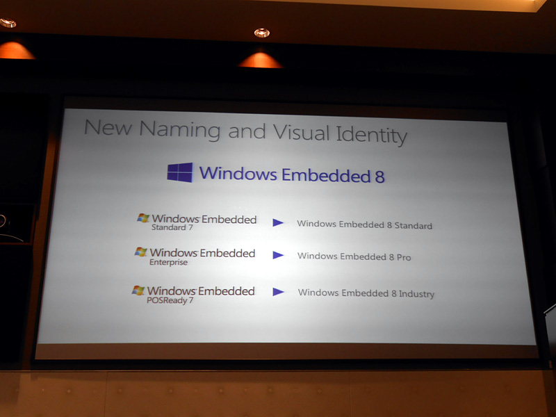

Windows Embedded 8シリーズのラインナップ
執筆日時：
米Microsoftは13日(現地時間)、Windows Embedded 8シリーズのラインナップ、および各々の提供時期を公開した。
ここら辺はだいぶ疎いのでまとめてみた。
Windows 8 ベース

- 「Windows Embedded 8 Standard」（旧「Windows Embedded 7 Standard」）
- 「Windows Embedded 8 Pro」（旧「Windows 7 for Embedded Systems」）
- 「Windows Embedded 8 Industry」（旧「Windows Embedded POSReady」＋製造業やヘルスケア企業向け）
Windows Phone 8 ベース
- 「Windows Embedded 8 Handheld」：郵便などの運送業者が使うハンディ端末への組み込みを想定
- 「Windows Embedded 8 Automotive」：自動車向け
「Windows Embedded 8 Automotive」は、別に Windows Phone 8 ベースではないかもしれない。文脈的にそうとっただけ。
デスクトップやモバイルしか知らないと「Silverlight は衰退？」だなんて思っちゃうひともいるけれど、こっちの分野では組み込み Silverlight なんてのもあるよね（C++ が使えたんじゃないかな）。まぁ、Silverlight と言っても、僕らが想像するデスクトップ・ブラウザ向けとは全然違うものなのかもしれないけれど。
Windows CE ベース
- 「Windows Embedded Compact 2013」
タッチやジェスチャーベースの入力、厳密なリアルタイム処理を必要とする小型デバイスをサポートする。2013年第四半期に提供開始
Windows Embedded | Microsoft のEmbedded ソリューションの評価と開発
「Opera」なんかもそうだけど、「自分たちが親しんでいるものが実は氷山の一角でした」というパターン、結構ある。